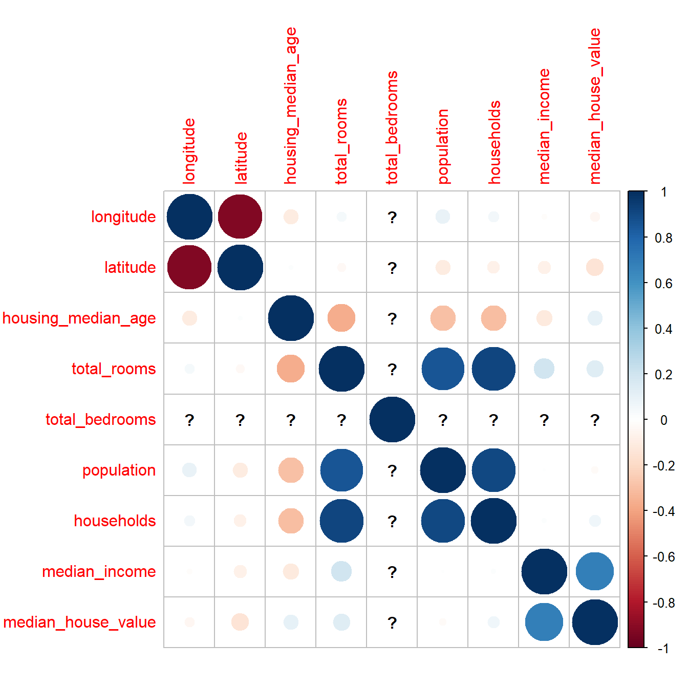
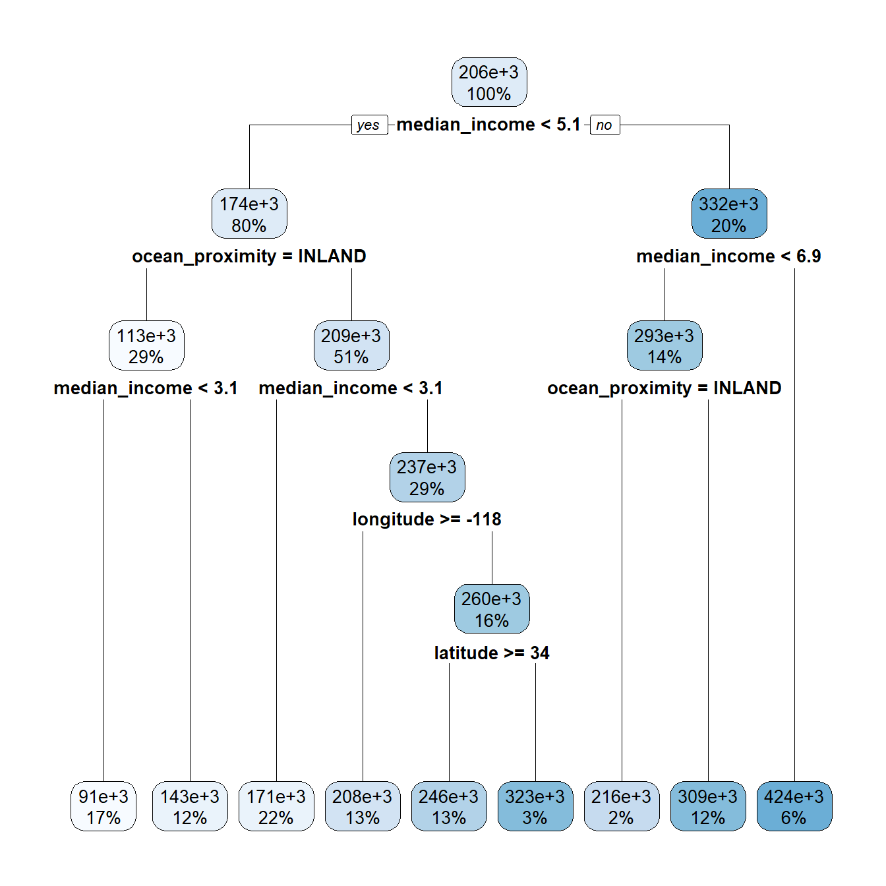

packages <- c(
"tibble",
"dplyr",
"readr",
"tidyr",
"purrr",
"broom",
"magrittr",
"corrplot",
"caret",
"rpart",
"rpart.plot",
"e1071",
"torch",
"luz"
)
# renv::install(packages)
sapply(packages, require, character.only=T)
Important
Please read the instructions carefully before submitting your assignment.
- This assignment requires you to only upload a
PDFfile on Canvas - Don’t collapse any code cells before submitting.
- Remember to make sure all your code output is rendered properly before uploading your submission.
⚠️ Please add your name to the author information in the frontmatter before submitting your assignment ⚠️
In this assignment, we will explore decision trees, support vector machines and neural networks for classification and regression. The assignment is designed to test your ability to fit and analyze these models with different configurations and compare their performance.
We will need the following packages:
Question 1
60 points
Prediction of Median House prices
1.1 (2.5 points)
The data folder contains the housing.csv dataset which contains housing prices in California from the 1990 California census. The objective is to predict the median house price for California districts based on various features.
Read the data file as a tibble in R. Preprocess the data such that:
- the variables are of the right data type, e.g., categorical variables are encoded as factors
- all column names to lower case for consistency
- Any observations with missing values are dropped
path <- "data/housing.csv"
df <- read_csv(path)Rows: 20640 Columns: 10
── Column specification ────────────────────────────────────────────────────────
Delimiter: ","
chr (1): ocean_proximity
dbl (9): longitude, latitude, housing_median_age, total_rooms, total_bedroom...
ℹ Use `spec()` to retrieve the full column specification for this data.
ℹ Specify the column types or set `show_col_types = FALSE` to quiet this message.1.2 (2.5 points)
Visualize the correlation matrix of all numeric columns in df using corrplot()
df %>%
select_if(is.numeric) %>%
cor() %>%
corrplot(method = "circle")
1.3 (5 points)
Split the data df into df_train and df_split using test_ind in the code below:
set.seed(42)
test_ind <- sample(
1:nrow(df),
floor(nrow(df)/10),
replace = FALSE
)
df_train <- df[-test_ind, ]
df_test <- df[test_ind, ]1.4 (5 points)
Fit a linear regression model to predict the median_house_value :
latitudelongitudehousing_median_agetotal_roomstotal_bedroomspopulationmedian_incomeocean_proximity
Interpret the coefficients and summarize your results.
lm_fit <- lm(median_house_value ~ ., data = df_train)
summary(lm_fit)
Call:
lm(formula = median_house_value ~ ., data = df_train)
Residuals:
Min 1Q Median 3Q Max
-555982 -42546 -10396 28580 762688
Coefficients:
Estimate Std. Error t value Pr(>|t|)
(Intercept) -2.260e+06 9.259e+04 -24.410 < 2e-16 ***
longitude -2.668e+04 1.072e+03 -24.884 < 2e-16 ***
latitude -2.531e+04 1.055e+03 -23.999 < 2e-16 ***
housing_median_age 1.074e+03 4.620e+01 23.245 < 2e-16 ***
total_rooms -6.357e+00 8.363e-01 -7.601 3.07e-14 ***
total_bedrooms 1.023e+02 7.330e+00 13.960 < 2e-16 ***
population -3.721e+01 1.114e+00 -33.407 < 2e-16 ***
households 4.648e+01 7.916e+00 5.872 4.38e-09 ***
median_income 3.919e+04 3.565e+02 109.935 < 2e-16 ***
ocean_proximityINLAND -3.900e+04 1.826e+03 -21.359 < 2e-16 ***
ocean_proximityISLAND 1.368e+05 3.428e+04 3.990 6.62e-05 ***
ocean_proximityNEAR BAY -3.149e+03 2.020e+03 -1.559 0.1191
ocean_proximityNEAR OCEAN 4.652e+03 1.650e+03 2.820 0.0048 **
---
Signif. codes: 0 '***' 0.001 '**' 0.01 '*' 0.05 '.' 0.1 ' ' 1
Residual standard error: 68480 on 18371 degrees of freedom
(192 observations deleted due to missingness)
Multiple R-squared: 0.6458, Adjusted R-squared: 0.6456
F-statistic: 2792 on 12 and 18371 DF, p-value: < 2.2e-161.5 (5 points)
Complete the rmse function for computing the Root Mean-Squared Error between the true y and the predicted yhat, and use it to compute the RMSE for the regression model on df_test
rmse <- function(y, yhat) {
sqrt(mean((y - yhat)^2))
}
lm_predictions <- predict(lm_fit, df_test)
lm_rmse <- rmse(df_test$median_house_value, lm_predictions)
lm_rmse[1] NA1.6 (5 points)
Fit a decision tree model to predict the median_house_value using the same predictors as in 1.4. Use the rpart() function.
library(rpart)
library(rpart.plot)
rpart_fit <- rpart(median_house_value ~ ., data = df_train)
rpart_predictions <- predict(rpart_fit, df_test)Visualize the decision tree using the rpart.plot() function.
rpart.plot(rpart_fit)
Report the root mean squared error on the test set.
rpart_rmse <- rmse(df_test$median_house_value, rpart_predictions)
rpart_rmse
rmse <- function(y, yhat) { sqrt(mean((y - yhat)^2)) }
lm_predictions <- predict(lm_fit,newdata = df_test)
rmse_lm <- rmse(df_test$median_house_value, lm_predictions)
print(rmse_lm)[1] NA1.7 (5 points)
Fit a support vector machine model to predict the median_house_value using the same predictors as in 1.4. Use the svm() function and use any kernel of your choice. Report the root mean squared error on the test set.
svm_fit <- svm(median_house_value ~ latitude + longitude + housing_median_age + total_rooms + total_bedrooms + population + median_income + ocean_proximity, data = df_train)
svm_predictions <- predict(svm_fit, newdata = df_test)
svm_rmse <- rmse(df_test$median_house_value, svm_predictions)Warning in y - yhat: longer object length is not a multiple of shorter object
lengthsvm_rmse [1] 149350.81.8 (25 points)
Initialize a neural network model architecture:
nn <- nn_module(
initialize = function(p,q1,q2,q3) {
self$hidden1 <- nn_linear(p, q1)
self$hidden2 <- nn_linear(q1, q2)
self$hidden3 <- nn_linear(q2, q3)
self$output <- nn_linear(q3, 1)
self$activation <- nn_relu()
self$sigmoid <- nn_sigmoid()
},
forward = function(x) {
x %>%
self$hidden1() %>% self$activation() %>%
self$hidden2() %>% self$activation() %>%
self$hidden3() %>% self$activation() %>%
self$output() %>% self$sigmoid()
}
)Fit a neural network model to predict the median_house_value using the same predictors as in 1.4. Use the model.matrix function to create the covariate matrix and luz package for fitting the network with \(32, 16, 8\) nodes in each of the three hidden layers.
fit_nn
M <- model.matrix(median_house_value ~ 0 + ., data = df_train)
nnet_fit <- nn %>%
setup(loss = nn_bce_loss(),
optimizer = optim_adam,
metrics = list(luz_metric_accuracy())) %>%
set_hparams(p = ncol(M),q1 = 32, q2 = 16, q3 = 8) %>%
set_opt_hparams(lr= 0.001) %>%
fit(data=list(
model.matrix(median_house_value ~ 0 + .,data = df_train),df_train %>% select(median_house_value) %>% as.matrix),
valid_data = list(
model.matrix(median_house_value ~ 0 + .,data = df_test),df_test %>% select(median_house_value) %>% as.matrix),
epochs = 2,
verbose = TRUE
)Epoch 1/2
Train metrics: Loss: -20598020 - Acc: 0
Valid metrics: Loss: -21476086 - Acc: 0
Epoch 2/2
Train metrics: Loss: -20669024 - Acc: 0
Valid metrics: Loss: -21476086 - Acc: 0Plot the results of the training and validation loss and accuracy.
plot(nnet_fit)
Report the root mean squared error on the test set.
#nnet_predictions <- predict(nnet_fit, model.matrix(median_house_value ~ 0 #+ ., data = df_test))
#nnet_predictions <- as.array(nnet_predictions)
#rmse <- sqrt(mean((df_test$median_house_value - nnet_predictions)^2))
#print(rmse)
Warning
Remember to use the as_array() function to convert the predictions to a vector of numbers before computing the RMSE with rmse()
1.9 (5 points)
Summarize your results in a table comparing the RMSE for the different models. Which model performed best? Why do you think that is?
#results <- data.frame(
# Model = c("Linear Regression", "Decision Tree", "Support Vector Machine"#, "Neural Network"),
# RMSE = c(rmse_lm, rpart_rmse, svm_rmse, rmse)
#)
#print(results)
—
Question 2
50 points
Spam email classification
The data folder contains the spam.csv dataset. This dataset contains features extracted from a collection of spam and non-spam emails. The objective is to classify the emails as spam or non-spam.
2.1 (2.5 points)
Read the data file as a tibble in R. Preprocess the data such that:
- the variables are of the right data type, e.g., categorical variables are encoded as factors
- all column names to lower case for consistency
- Any observations with missing values are dropped
df <- read_csv("data/spambase.csv")Rows: 4601 Columns: 58
── Column specification ────────────────────────────────────────────────────────
Delimiter: ","
dbl (58): word_freq_1, word_freq_2, word_freq_3, word_freq_4, word_freq_5, w...
ℹ Use `spec()` to retrieve the full column specification for this data.
ℹ Specify the column types or set `show_col_types = FALSE` to quiet this message.2.2 (2.5 points)
Split the data df into df_train and df_split using test_ind in the code below:
set.seed(42)
test_ind <- sample(
1:nrow(df),
floor(nrow(df)/10),
replace=FALSE
)
df_train <- df[-test_ind, ]
df_test <- df[test_ind, ]Complete the overview function which returns a data frame with the following columns: accuracy, error, false positive rate, true positive rate, between the true true_class and the predicted pred_class for any classification model.
overview <- function(pred_class, true_class) {
accuracy <- sum(pred_class == true_class) / length(true_class)
error <- 1 - accuracy
true_positives <- sum((pred_class == 1) & (true_class == 1))
true_negatives <- sum((pred_class == 0) & (true_class == 0))
false_positives <- sum((pred_class == 1) & (true_class == 0))
false_negatives <- sum((pred_class == 0) & (true_class == 1))
true_positive_rate <- true_positives / (true_positives + false_negatives)
false_positive_rate <- false_positives / (false_positives + true_negatives)
return(
data.frame(
accuracy = accuracy,
error = error,
true_positive_rate = true_positive_rate,
false_positive_rate = false_positive_rate
)
)
}2.3 (5 points)
Fit a logistic regression model to predict the spam variable using the remaining predictors. Report the prediction accuracy on the test set.
glm_fit <- glm(spam ~ ., data = df_train, family = "binomial")Warning: glm.fit: fitted probabilities numerically 0 or 1 occurredglm_classes <- predict(glm_fit, df_test, type = "response") > 0.5
glm_overview <- overview(glm_classes, df_test$spam)
print(glm_overview) accuracy error true_positive_rate false_positive_rate
1 0.923913 0.07608696 0.8670213 0.036764712.4 (5 points)
Fit a decision tree model to predict the spam variable using the remaining predictors. Use the rpart() function and set the method argument to "class".
rpart_fit <- rpart(spam ~ ., data = df_train, method = "class")
rpart_classes <- predict(rpart_fit, df_test, type = "class")Visualize the decision tree using the rpart.plot() function.
library(rpart.plot)
rpart.plot(rpart_fit)
Report the prediction accuracy on the test set.
rpart_overview <- overview(rpart_classes, df_test$spam)
print(rpart_overview) accuracy error true_positive_rate false_positive_rate
1 0.8782609 0.1217391 0.787234 0.058823532.5 (5 points)
Fit a support vector machine model to predict the spam variable using the remaining predictors. Use the svm() function and use any kernel of your choice. Remember to set the type argument to "C-classification" if you haven’t already converted spam to be of type factor.
svm_fit <- svm(spam ~ ., data = df_train, type = "C-classification")
svm_classes <- predict(svm_fit, df_test)Report the prediction accuracy on the test set.
svm_overview <- overview(svm_classes, df_test$spam)
print(svm_overview) accuracy error true_positive_rate false_positive_rate
1 0.923913 0.07608696 0.8776596 0.044117652.6 (25 points)
Using the same neural network architecture as in 1.9, fit a neural network model to predict the spam variable using the remaining predictors.
Classification vs. Regression
Note that the neural network in Q 1.9 was a regression model. You will need to modify the neural network architecture to be a classification model by changing the output layer to have a single node with a sigmoid activation function.
Use the model.matrix function to create the covariate matrix and luz package for fitting the network with \(32, 16, 8\) nodes in each of the three hidden layers.
NNet <- nn_module(
initialize = function(p, q1, q2, q3){
weights <- list(
W1 = torch_randn(q1, p),
W2 = torch_randn(q2, q1),
W3 = torch_randn(q3, q2),
W_out = torch_randn(1, q3)
)
biases <- list(
b1 = torch_randn(q1),
b2 = torch_randn(q2),
b3 = torch_randn(q3),
b_out = torch_randn(1)
)
return(list(weights = weights, biases = biases))
},
forward = function(x){
W1 <- self$weights$W1
W2 <- self$weights$W2
W3 <- self$weights$W3
W_out <- self$weights$W_out
b1 <- self$biases$b1
b2 <- self$biases$b2
b3 <- self$biases$b3
b_out <- self$biases$b_out
z1 <- torch_addmm(b1, x, torch_t(W1))
a1 <- torch_relu(z1)
z2 <- torch_addmm(b2, a1, torch_t(W2))
a2 <- torch_relu(z2)
z3 <- torch_addmm(b3, a2, torch_t(W3))
a3 <- torch_relu(z3)
# Output layer with sigmoid activation function
logits <- torch_addmm(b_out, a3, torch_t(W_out))
output <- torch_sigmoid(logits)
return(output)
}
)
covariate_matrix <- model.matrix(spam ~ ., data = df_train)[,-1] # Exclude intercept column
target <- ifelse(df_train$spam == "spam", 1, 0)2.7 (5 points)
Summarize your results in a table comparing the accuracy metrics for the different models.
accuracy_logistic <- mean(glm_classes == df_test$spam)
accuracy_decision_tree <- mean(rpart_classes == df_test$spam)
accuracy_svm <- mean(svm_classes == df_test$spam)
results <- data.frame(
Model = c("Logistic Regression", "Decision Tree", "SVM"), #"Neural Network"),
Accuracy = c(accuracy_logistic, accuracy_decision_tree, accuracy_svm) #, accuracy_neural_network)
)
print(results) # Insert your code here Model Accuracy
1 Logistic Regression 0.9239130
2 Decision Tree 0.8782609
3 SVM 0.9239130If you were to choose a model to classify spam emails, which model would you choose? Think about the context of the problem and the cost of false positives and false negatives.
—
Question 3
60 points
Three spirals classification
To better illustrate the power of depth in neural networks, we will use a toy dataset called the “Three Spirals” data. This dataset consists of two intertwined spirals, making it challenging for shallow models to classify the data accurately.
This is a multi-class classification problem
The dataset can be generated using the provided R code below:
generate_three_spirals <- function(){
set.seed(42)
n <- 500
noise <- 0.2
t <- (1:n) / n * 2 * pi
x1 <- c(
t * (sin(t) + rnorm(n, 0, noise)),
t * (sin(t + 2 * pi/3) + rnorm(n, 0, noise)),
t * (sin(t + 4 * pi/3) + rnorm(n, 0, noise))
)
x2 <- c(
t * (cos(t) + rnorm(n, 0, noise)),
t * (cos(t + 2 * pi/3) + rnorm(n, 0, noise)),
t * (cos(t + 4 * pi/3) + rnorm(n, 0, noise))
)
y <- as.factor(
c(
rep(0, n),
rep(1, n),
rep(2, n)
)
)
return(tibble::tibble(x1=x1, x2=x2, y=y))
}3.1 (5 points)
Generate the three spirals dataset using the code above. Plot \(x_1\) vs \(x_2\) and use the y variable to color the points.
df <- generate_three_spirals()
plot(
df$x1, df$x2,
col = df$y,
pch = 20
)
Define a grid of \(100\) points from \(-10\) to \(10\) in both \(x_1\) and \(x_2\) using the expand.grid(). Save it as a tibble called df_test.
grid <- seq(-10, 10, length.out = 100)
df_test <- tibble(x1 = rep(grid, 100), x2 = rep(grid, each = 100))3.2 (10 points)
Fit a classification tree model to predict the y variable using the x1 and x2 predictors, and plot the decision boundary.
rpart_fit <- rpart(y ~ x1 + x2, data = df, method = "class")
rpart_classes <- predict(rpart_fit, df_test, type = "class")
plot_decision_boundary <- function(predictions){
plot(df_test$x1, df_test$x2, col = predictions, pch = 0)
points(df$x1, df$x2, col = df$y, pch = 20)
}
plot_decision_boundary(rpart_classes)
Plot the decision boundary using the following function:
plot_decision_boundary <- function(predictions){
plot(
df_test$x1, df_test$x2,
col = predictions,
pch = 0
)
points(
df$x1, df$x2,
col = df$y,
pch = 20
)
}plot_decision_boundary(rpart_classes)
3.3 (10 points)
Fit a support vector machine model to predict the y variable using the x1 and x2 predictors. Use the svm() function and use any kernel of your choice. Remember to set the type argument to "C-classification" if you haven’t converted y to be of type factor.
svm_fit <- svm(y ~ x1 + x2, data = df, type = "C-classification")
svm_classes <- predict(svm_fit, df_test)
plot_decision_boundary(svm_classes)
Instructions
For the next questions, you will need to fit a series of neural networks. In all cases, you can:
- set the number of units in each hidden layer to 10
- set the output dimension
oto 3 (remember this is multinomial classification) - use the appropriate loss function for the problem (not
nn_bce_loss) - set the number of epochs to \(50\)
- fit the model using the
luzpackage
You can use any optimizer of your choice, but you will need to tune the learning rate for each problem.
3.4 (10 points)
Fit a neural network with 1 hidden layer to predict the y variable using the x1 and x2 predictors.
NN1 <- nn_module(
initialize = function(p, q1, o){
self$hidden1 <- nn_linear(p, q1) # Insert your code here
self$output <- nn_linear(q1, o) # Insert your code here
self$activation <- nn_relu() # Insert your code here
},
forward = function(x){
x %>%
self$hidden1() %>%
self$activation() %>%
self$output()
}
)In order to generate the class predictions, you will need to use the predict() function as follows
test_matrix <- df_test %>% select(x1, x2) %>% as.matrixPlot the results using the plot_decision_boundary() function.
3.5 (10 points)
Fit a neural network with 0 hidden layers to predict the y variable using the x1 and x2 predictors.
NN0 <- nn_module(
initialize = function(p, o){
self$output <- nn_linear(p, o) # Insert your code here
},
forward = function(x){
x %>%
self$output() # Insert your code here
}
)Plot the results using the plot_decision_boundary() function.
3.6 (10 points)
Fit a neural network with 3 hidden layers to predict the y variable using the x1 and x2 predictors.
NN2 <- nn_module(
initialize = function(p, q1, q2, o){
self$hidden1 <- nn_linear(p, q1)
self$hidden2 <- nn_linear(q1, q2)
self$hidden3 <- nn_linear(q2, q2)
self$output <- nn_linear(q2, o)
self$activation <- nn_relu() # Insert your code here
},
forward = function(x){
x %>%
self$hidden1() %>%
self$activation() %>%
self$hidden2() %>%
self$activation() %>%
self$hidden3() %>%
self$activation() %>%
self$output() # Insert your code here
}
)Plot the results using the plot_decision_boundary() function.
3.7 (5 points)
What are the differences between the models? How do the decision boundaries change as the number of hidden layers increases?
As the number of hidden layers in the neural network models increases, the decision boundaries become more complex and flexible, allowing the model to better capture the underlying structure of the three-spirals dataset.
—
Session Information
Print your R session information using the following command
sessionInfo()R version 4.3.2 (2023-10-31 ucrt)
Platform: x86_64-w64-mingw32/x64 (64-bit)
Running under: Windows 11 x64 (build 22631)
Matrix products: default
locale:
[1] LC_COLLATE=English_United States.utf8
[2] LC_CTYPE=English_United States.utf8
[3] LC_MONETARY=English_United States.utf8
[4] LC_NUMERIC=C
[5] LC_TIME=English_United States.utf8
time zone: America/New_York
tzcode source: internal
attached base packages:
[1] stats graphics grDevices utils datasets methods base
other attached packages:
[1] luz_0.4.0 torch_0.12.0 e1071_1.7-14 rpart.plot_3.1.2
[5] caret_6.0-94 lattice_0.21-9 ggplot2_3.5.0 corrplot_0.92
[9] broom_1.0.5 purrr_1.0.2 tidyr_1.3.1 readr_2.1.5
[13] dplyr_1.1.4 tibble_3.2.1 rpart_4.1.23 magrittr_2.0.3
loaded via a namespace (and not attached):
[1] tidyselect_1.2.1 timeDate_4032.109 fastmap_1.1.1
[4] pROC_1.18.5 digest_0.6.35 timechange_0.3.0
[7] lifecycle_1.0.4 survival_3.5-7 processx_3.8.4
[10] compiler_4.3.2 progress_1.2.3 rlang_1.1.3
[13] tools_4.3.2 utf8_1.2.4 yaml_2.3.8
[16] data.table_1.15.4 knitr_1.46 prettyunits_1.2.0
[19] bit_4.0.5 plyr_1.8.9 withr_3.0.0
[22] nnet_7.3-19 grid_4.3.2 stats4_4.3.2
[25] fansi_1.0.6 colorspace_2.1-0 future_1.33.2
[28] globals_0.16.3 scales_1.3.0 iterators_1.0.14
[31] MASS_7.3-60 zeallot_0.1.0 cli_3.6.2
[34] crayon_1.5.2 rmarkdown_2.26 generics_0.1.3
[37] rstudioapi_0.16.0 future.apply_1.11.2 reshape2_1.4.4
[40] tzdb_0.4.0 proxy_0.4-27 stringr_1.5.1
[43] splines_4.3.2 parallel_4.3.2 coro_1.0.4
[46] vctrs_0.6.5 hardhat_1.3.1 Matrix_1.6-1.1
[49] jsonlite_1.8.8 callr_3.7.6 hms_1.1.3
[52] bit64_4.0.5 listenv_0.9.1 foreach_1.5.2
[55] gower_1.0.1 recipes_1.0.10 glue_1.7.0
[58] parallelly_1.37.1 ps_1.7.6 codetools_0.2-19
[61] lubridate_1.9.3 stringi_1.8.3 gtable_0.3.4
[64] munsell_0.5.1 pillar_1.9.0 htmltools_0.5.8.1
[67] ipred_0.9-14 lava_1.8.0 R6_2.5.1
[70] vroom_1.6.5 evaluate_0.23 backports_1.4.1
[73] class_7.3-22 Rcpp_1.0.12 nlme_3.1-163
[76] prodlim_2023.08.28 xfun_0.43 fs_1.6.3
[79] pkgconfig_2.0.3 ModelMetrics_1.2.2.2